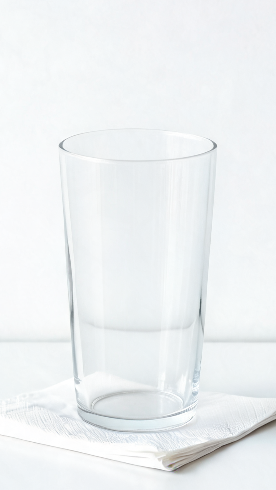

밤하늘·캐릭터 없음. 완료 버튼은 먹이기 화면 "마무리"와 같은 자리·크기(좌우 24, 아래 8 + 홈 인디케이터, 높이 56). 숫자는 오늘 화면과 같은 Anton + 면별 색.
영수증처럼 위에서 아래로 읽힌다. 줄 두 개와 얇은 선만 써서 가장 조용함. 엄지 근처에 숫자가 모여 있음.
면 색을 통째로 깔아 포스터처럼. 가장 강하고 "하루 끝" 무게감이 있음. 한 면만 기록하면 블록 하나가 꽉 참.
오늘 화면 큰 숫자 문법(당 왼쪽, 카페인 오른쪽, 라벨 위)을 그대로 대각선으로. 앱 안에서 가장 자연스럽게 이어짐.

카드·X 없이 "오늘 남은 당" 바로 위 한 줄. 6px 올라오며 나타나 약 3.5초 뒤 사라짐. 자리를 따로 잡지 않아 숫자가 밀리지 않음. 점은 면 색.